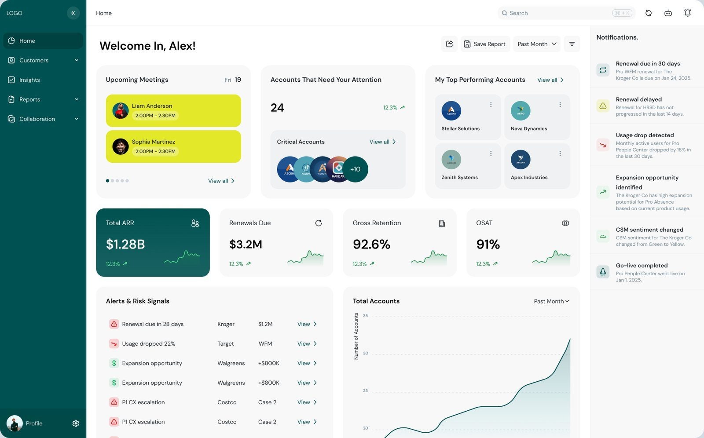
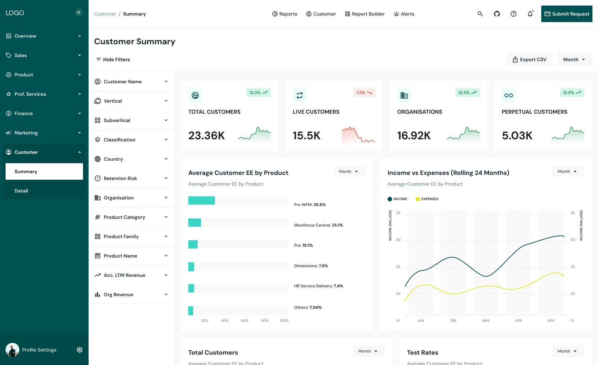
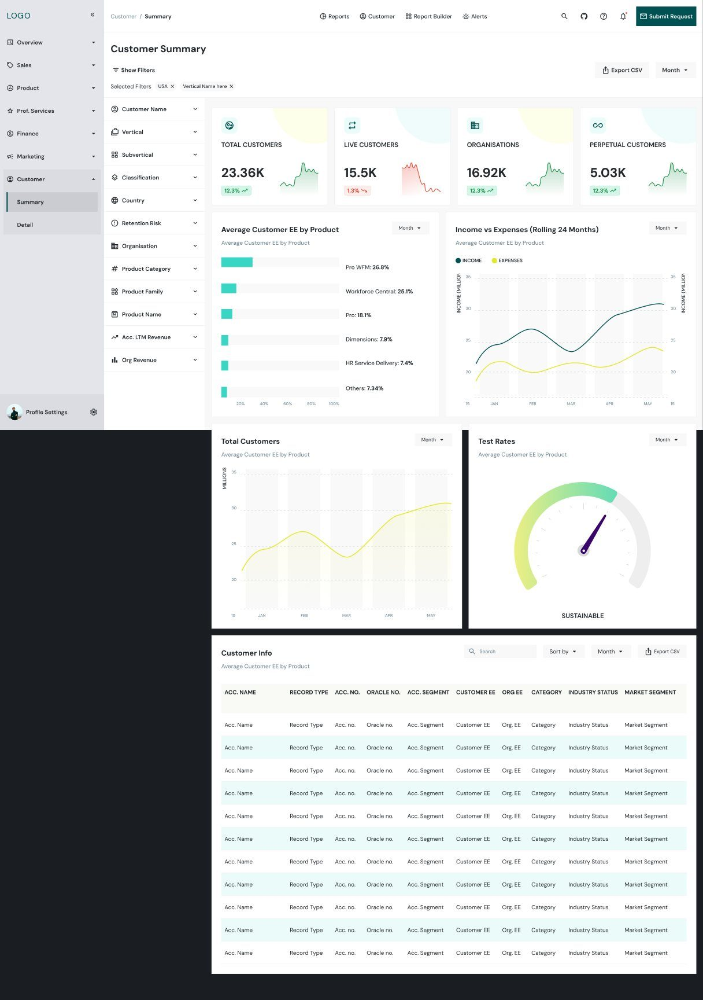
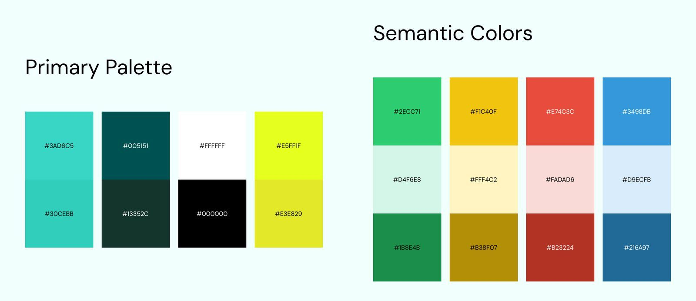
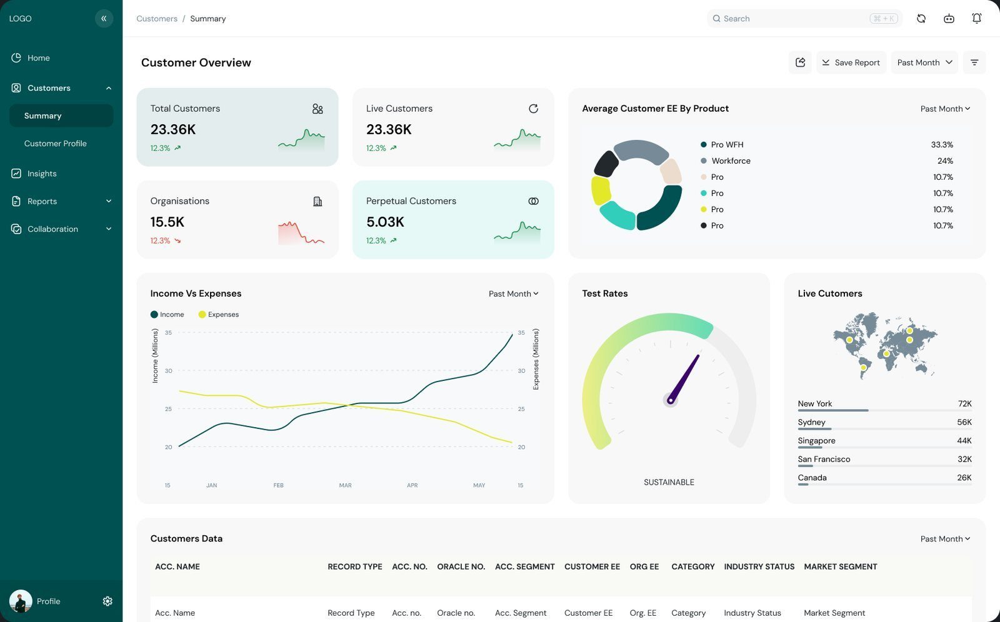
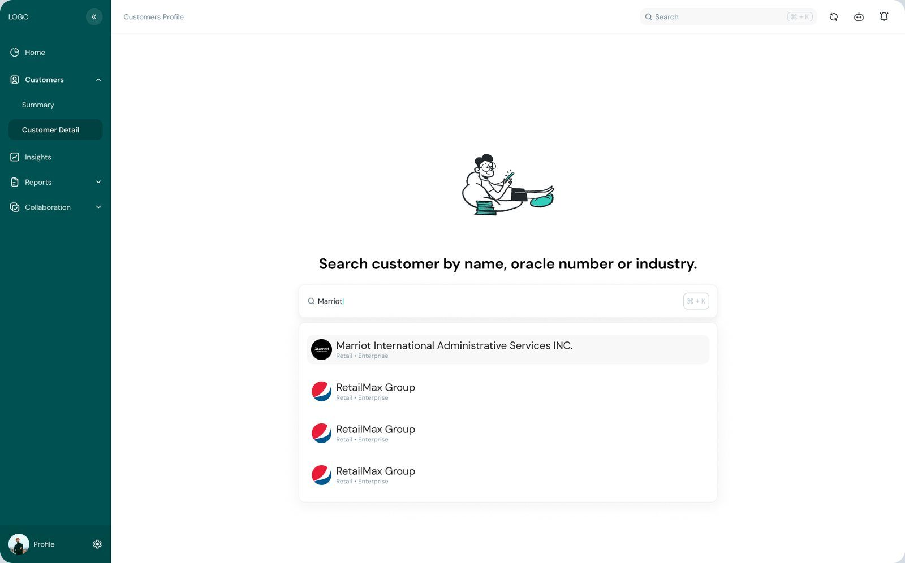
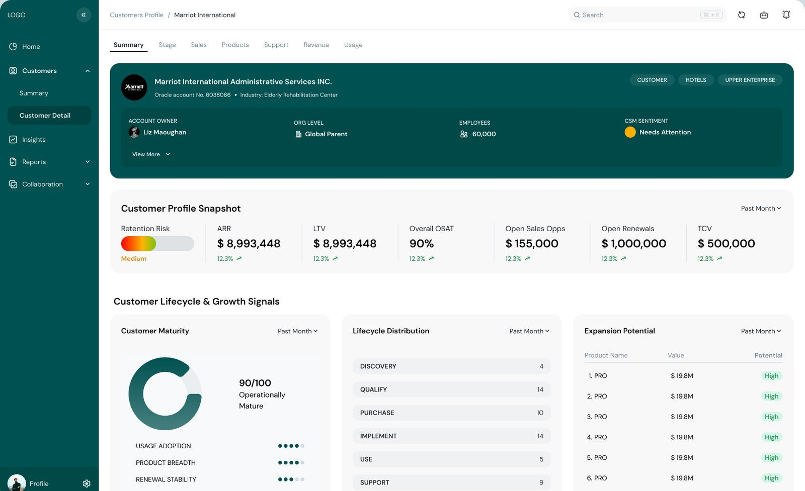
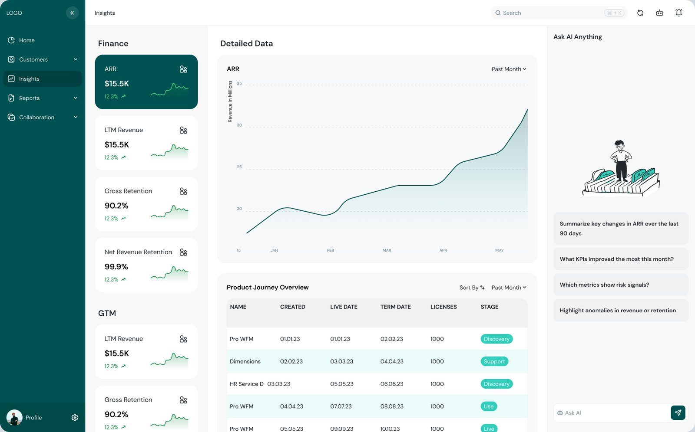

Customer success platform
Turns account complexity into clear action for customer success managers.

Context
An internal customer success platform used by CSMs and account leaders at a global enterprise software company. It brings ARR, renewals, retention, product usage and support signals for thousands of accounts into one place. I led discovery, information architecture, the visual system and every screen, tied to a company-wide rebrand.
The problem
The data was all there. The hierarchy wasn't. Built over many cycles by different teams, the old tool mirrored database tables: dozens of filters before any answer, the same metric named three ways, and nothing telling a CSM which account needed them today.
Research
How
What we learned
Start with 'who needs me?'
CSMs open the tool to find the accounts at risk, not to browse charts.
One account, one page
Renewals, usage and support lived in different reports.
Same number, three names
Teams used different labels for the same metric, so nobody trusted them.
Filters were a wall
Twelve filters stood between the user and any answer.
Who it's for
Customer success manager
Owns 40 to 80 accounts. Needs renewals, risk and next actions, fast.
Account leader
Reports ARR, retention and expansion upward. Needs the portfolio view.
Structure and direction
Iteration 1: filter-first
The first direction kept the old mental model: twelve filters on the left, metrics on the right. Accurate, but it still asked users to build every answer themselves.

Iteration 2: one long report
Next I brought everything onto one page with collapsible filters. Better, but still a report. Testing showed CSMs wanted to start from action, not data.

A system tied to the rebrand
Deep teal and lime from the new brand, a full semantic set for risk, warning, success and info, and DM Sans across every surface.

The design
Home: what needs you today
Meetings, accounts that need attention, top performers, ARR, renewals, retention and live alerts with their dollar value. Notifications turn signals into actions.
Customer overview
The portfolio at a glance: customers, organisations, product mix, income against expenses, health and where customers are live.

Find any account in one search
Search by name, account number or industry instead of filtering through tables.

One account, one page
Owner, sentiment, retention risk, ARR, LTV, open renewals, maturity, lifecycle stage and expansion potential, together for the first time.

Insights with Ask AI
Finance and GTM metrics with detailed trends, a product journey table and an AI panel that answers questions like "which metrics show risk signals?"

Key decisions
Action before data
Home opens on who needs you and what it is worth, not on charts.
Search replaces filters
One search box instead of twelve dropdowns to reach an account.
One name per metric
A shared vocabulary across teams, so numbers match everywhere.
AI where questions start
Ask AI sits next to the data it explains.
Outcome
Want this depth
on your product?
20 minutes. You leave with a plan, even if we don't work together.
Replies within 24 hours.